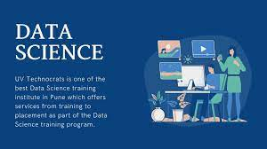

Computer Science is a field of study and discipline that deals with the theory, development, and application of software systems and computing technologies. It encompasses a wide range of topics, including the design and analysis of algorithms, programming languages, computer architecture, artificial intelligence, data structures, software engineering, and more.
In essence, computer science involves understanding the principles behind computing and using that knowledge to solve real-world problems. It spans both theoretical and practical aspects, from developing new algorithms and designing efficient systems to writing code and creating software applications.
Key areas within computer science include:
Algorithms and Data Structures: Designing efficient algorithms for problem-solving and organizing data in a way that facilitates quick and effective retrieval.
Programming Languages: Studying and using different programming languages to write software and applications.
Computer Architecture: Understanding the design and organization of computer systems, including hardware components like processors, memory, and input/output devices.
Artificial Intelligence and Machine Learning: Developing systems that can perform tasks that typically require human intelligence, such as problem-solving, speech recognition, and decision-making.
Software Engineering: Applying engineering principles to the entire software development process, from requirements gathering to design, coding, testing, and maintenance.
Databases: Managing and organizing large sets of data efficiently, including database design and query optimization.
Networking: Understanding the principles of computer networks, communication protocols, and internet technologies.
Cybersecurity: Protecting computer systems, networks, and data from security breaches and unauthorized access.
Computer Science plays a fundamental role in shaping the modern world by providing solutions to a wide range of problems across various industries, from business and healthcare to education and entertainment. It is a dynamic and evolving field that continues to drive technological advancements and innovation.
Things get interesting because you are eager to know more , or you become eager to know more because it is interesting?Why Use Computers?
Computers are powerful tools that have become integral to many aspects of modern life for several reasons:
Processing Power: Computers can perform complex calculations and process vast amounts of data at speeds far beyond human capability.
Efficiency: Computers automate repetitive tasks, increasing efficiency and reducing the time required for various processes.
Information Storage and Retrieval: Computers enable the storage and quick retrieval of vast amounts of information, facilitating data management and organization.
Communication: Computers connect people globally through the internet, enabling instant communication and information exchange.
Automation: Computers are used in industries for automation, leading to increased productivity and precision.
Entertainment: Computers provide a platform for various forms of entertainment, including gaming, streaming, and multimedia.
Why Study Computer Science?
If you're asking why someone might choose to study computer science, here are some reasons:
Problem Solving: Computer science teaches systematic and logical problem-solving skills, which are valuable in various fields.
Innovation: Computer scientists contribute to technological innovations that shape the future of industries and societies.
Versatility: Computer science skills are versatile and applicable across diverse domains, from healthcare and finance to education and entertainment.
Job Opportunities: The demand for computer science professionals is high, offering a wide range of career opportunities and competitive salaries.
Creativity: Computer science allows for creative expression through software development, design, and the creation of novel solutions.
Critical Thinking: Studying computer science fosters critical thinking and analytical skills, which are essential in many professional contexts.
In summary, computers and computer science play crucial roles in our lives, from improving efficiency and automation to fostering innovation and providing a foundation for various career paths.

WEB DEVELOPMENT
WEB DEVELOPMENT
PRICE : 2400 GHANA CEDIS
Web development is a field that involves creating and maintaining websites or web applications. Here are several reasons why web development is important and attractive to many individuals and businesses:
Global Reach: Websites and web applications provide a global platform for reaching a vast audience. They are accessible to anyone with an internet connection, enabling businesses and individuals to connect with people worldwide.
Information Accessibility: Web development facilitates the creation of online platforms for sharing information. Whether it's educational content, news, or resources, the web makes information readily available to a wide audience.
E-commerce Opportunities: Web development is crucial for e-commerce, allowing businesses to establish an online presence and conduct transactions over the internet. This has

DATA SCIENCE
DATA SCIENCE
PRICE : 2000 GHANA CEDIS
Data Science is a multidisciplinary field that combines expertise from statistics, mathematics, computer science, and domain-specific knowledge to extract meaningful insights and knowledge from data. It encompasses a wide range of techniques, methods, and tools for collecting, analyzing, and interpreting large and complex datasets. Here are key aspects of data science.Data scientists play a crucial role in extracting valuable insights from data, driving decision-making processes, and contributing to innovation across various industries, including healthcare, finance, marketing, and more. The interdisciplinary nature of data science requires a diverse skill set

APLLICATION DEVELOPMENT
APLLICATION DEVELOPMENT
PRICE:1500 GHANA CEDIS
Android application development is the process of creating software applications that run on the Android operating system. Android is a popular mobile operating system developed by Google, and it powers a vast majority of smartphones and tablets globally. Here's a general guide on getting started with Android app development:
Setup Your Development Environment:
Install Android Studio: Android Studio is the official integrated development environment (IDE) for Android development. You can download it from the official website.
Learn the Basics of Java or Kotlin:
Android apps are typically written in Java or Kotlin. While Java has been traditionally used, Kotlin has become the preferred language for Android development. Understanding the basics of either language is crucial.
Understand the Android Architecture:
Get familiar with the key components of Android architecture, such as activities, fragments, intents, layouts, and resources. Understand the Android application lifecycle.
ETHICAL HACKING
ETHICAL THINKING
PRICE: 1700 GHANA CEDIS
Ethical Thinking: Navigating Moral Decision-Making
Ethical thinking involves the consideration of moral principles, values, and consequences to guide decision-making. It encompasses a reflective and intentional approach to ensure that actions align with ethical standards and principles. Here are key aspects of ethical thinking.Ethical thinking is an ongoing process that involves continuous reflection, learning, and adaptation. It is fundamental in personal and professional contexts, influencing individual behaviors, organizational culture, and societal norms. Ethical thinking is not only about avoiding harm but also about actively promoting the well-being of individuals and communities.Identification of Values: Recognizing personal and organizational values that shape decision-making.
Ethical Principles: Applying foundational ethical principles such as honesty, integrity, fairness, and respect.
Reflection and Self-awareness:
Self-Examination: Reflecting on personal biases, beliefs, and motivations that may influence ethical judgments.
Cultural Awareness: Recognizing the impact of cultural, social, and contextual factors on ethical perspectives.
MICROSOFT OFFICE
MICROSOFT OFFICE
PRICE: 1300 GHANA CEDIS
Microsoft Word and Excel are two widely used applications in the Microsoft Office Suite. They serve distinct purposes and are commonly used for word processing and spreadsheet-related tasks, respectively. Here's a brief overview of each:
Microsoft Word:
Purpose:
Microsoft Word is a word processing software that allows users to create, edit, and format documents. It is widely used for tasks such as writing letters, creating reports, designing flyers, and more.
Key Features:
Document Creation: Create documents from scratch or use templates for various purposes.
Text Formatting: Apply styles, fonts, colors, and formatting options to text.
Images and Graphics: Insert and format images, shapes, and other visual elements.
Collaboration: Track changes, add comments, and collaborate with others in real-time.
Page Layout: Adjust page margins, orientation, and other layout settings.
Spell Check and Grammar: Built-in spelling and grammar checking features.
Table of Contents and Indexing: Create and manage tables of contents and indexes.

DIGITAL MARKETING
DIGITAL MARKETING
PRICE: 1400 GHANA CEDIS
E-business, short for electronic business, refers to the use of digital technologies to conduct and streamline business processes. It encompasses a wide range of activities that leverage the internet, electronic networks, and digital technologies to enhance and transform business operations. E-business is a broad term that includes various online business models, transactions, and interactions. Here are key components and aspects of e-business:
Online Transactions:
E-commerce: Conducting buying and selling of goods and services online. This includes B2C (business-to-consumer), B2B (business-to-business), and C2C (consumer-to-consumer) transactions.
Online Presence:
Websites: Building and maintaining a digital presence through websites. Websites serve as the virtual storefront for many businesses.
Digital Marketing:
Online Advertising: Utilizing digital channels for advertising, such as social media ads, search engine marketing (SEM), and display advertising.
Search Engine Optimization (SEO): Optimizing web content to improve visibility in search engine results.
Email Marketing: Sending targeted messages to a group of people via email to promote products or services.
COMPUTER NETWORK
COMPUTER NETWORK
PRICE:2000 GHANA CEDIS
A computer network is a set of interconnected computers that communicate with each other and share resources. These networks can be as small as a local area network (LAN) within a single building or as vast as a global network like the internet. Computer networks enable the exchange of information, resources, and services among connected devices. Here are key components and concepts related to computer networks.Network Security:
Protective Measures: Strategies and tools to safeguard networks from unauthorized access, attacks, and data breaches.
Network Management:
Monitoring and Administration: Activities to ensure the efficient operation of a network, including troubleshooting, performance optimization, and resource allocation.
Understanding the principles and components of computer networks is crucial for designing, maintaining, and troubleshooting network infrastructures in various settings, from homes and small businesses to large enterprises and global communication systems.

PROGRAMMING
PROGRAMMING
PRICE: 2500 GHANA CEDIS
The decision to engage in programming, or coding, is driven by a variety of factors, and individuals may have different motivations. Here are several reasons why people choose to learn and practice programming:
Problem Solving: Programming is essentially about solving problems using logic and creativity. Many people find satisfaction in the process of breaking down complex problems into smaller, manageable tasks and developing solutions through coding.
Career Opportunities: Learning programming opens up a wide range of career opportunities. Many industries, including technology, finance, healthcare, and entertainment, require skilled programmers to develop software, applications, and websites.
Creativity and Innovation: Programming provides a creative outlet for individuals to bring their ideas to life. Writing code allows for the creation of new software, apps, games, and other digital solutions, fostering innovation.
Automation: Programming enables the automation of tasks, making processes more efficient. This is particularly valuable in various industries, from business operations to scientific research.
LINUX ADMINISTRATION
LINUX ADMINISTRATION
PRICE:2100 GHANA CEDIS
Linux administration involves the management, configuration, and maintenance of Linux-based systems. Here's an overview of key aspects related to Linux administration:
User and Group Management:
Creating, modifying, and deleting user accounts.
Managing user permissions and group assignments.
File System Management:
Navigating and understanding the Linux file system.
Creating, deleting, and modifying files and directories.
Managing file and directory permissions.Collaboration and Communication:
Collaborating with other administrators and team members.
Communicating effectively about system changes and issues.
Automation Tools:
Utilizing automation tools like Ansible or Puppet for configuration management.
Implementing Infrastructure as Code (IaC) principles.
Linux administration is a dynamic and evolving field, and administrators often need to adapt to new technologies and tools. A solid understanding of Linux fundamentals, combined with continuous learning, is essential for effective Linux system management.